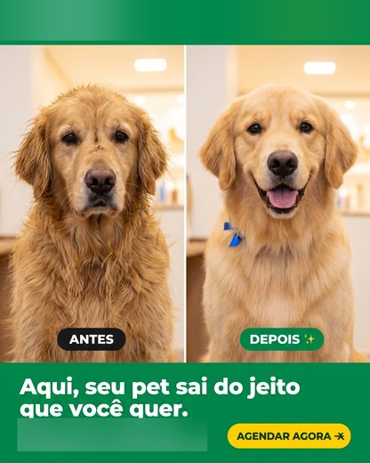
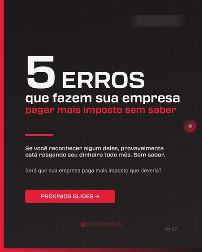
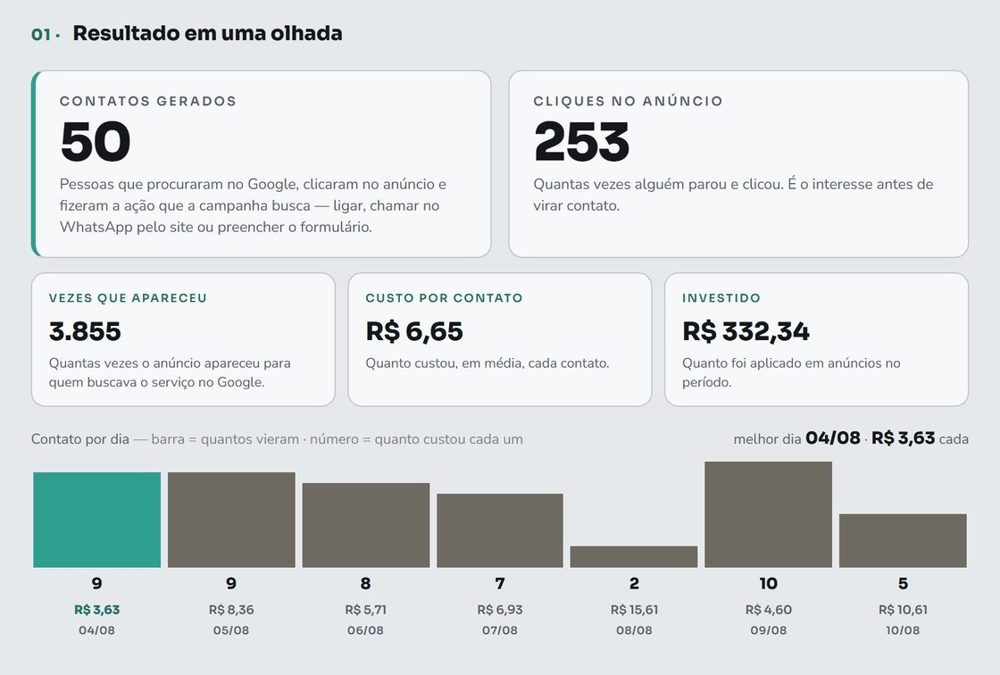
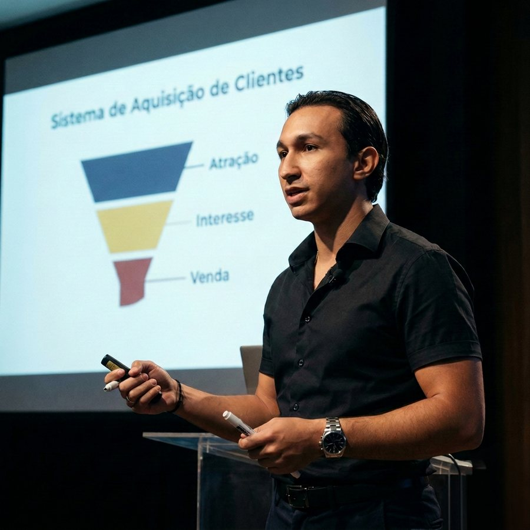

Se o seu WhatsApp leva sete horas para responder, mais verba só faz chegar mais gente para esperar.
verba maior não conserta filaA ZX é para quem
se encaixa em
uma dessas situações.
- Depende de indicação e torce para alguém indicar todo mês
- Não tem tempo de virar especialista em marketing além de tocar o negócio
- Já investiu em anúncio e não viu um cliente novo entrar
- Deseja ter uma presença consistente nas redes sociais
- Busca previsibilidade de procura pelos seus serviços
- Quer expandir o seu negócio
Se o mês fraco continua sendo o mês sem indicação, o problema não está no seu serviço.
No mesmo mês em que a indicação não veio, alguém procurou exatamente o que você faz, no Google e no Instagram, e acabou fechando com outra empresa. O nosso trabalho é colocar o seu nome na frente dessa pessoa na hora em que ela procura, e ter os números reais de todo o processo.
Barbearia, tatuagem, contabilidade, clínica, banho e tosa, veterinário, viagens. Todas empresas que cansaram de depender de indicação e decidiram agir, confiando na ZX.
O que a ZX olha antes do anúncio
Mesmo o melhor marketing não conserta atendimento ruim. Por isso a ZX começa olhando o seu processo comercial.
Se em três segundos a pessoa não entende o serviço, o clique que você pagou vira saída.
o clique morre antes da conversaSem régua do que acontece depois do clique, qualquer relatório vira ficção. Dá para escrever qualquer coisa.
sem medida, não existe conferênciaPor isso começamos olhando o que acontece com quem já chega hoje, para aí sim focarmos nos anúncios.
E a ZX te ajuda nisto também: orientando o seu processo comercial a funcionar de uma forma estruturada, com a menor perda de clientes.
O que a ZX te entrega
Quatro engrenagens que trazem demanda no seu WhatsApp.
01Estratégia
Antes de anunciar, definimos como vamos aparecer e falar para seu público-alvo, e por que alguém escolheria você em vez do concorrente da esquina.
o anúncio passa a ter o que dizer- Posicionamento da marca, o que você diz que faz e para quem
- Análise de quem disputa o mesmo cliente na sua região
- Mapeamento do público-alvo: quem é a pessoa que compra de você
- Consultoria do atendimento, o caminho da conversa até a venda


02Produção
Criação dos materiais que a estratégia que desenhamos precisa para rodar.
você não precisa virar produtor de conteúdo- Planejamento do mês antes de qualquer publicação
- Artes e vídeos para anúncio e para o perfil
- Roteirização e edição dos conteúdos dos anúncios
- Página de captação: texto e desenho, ou ajuste na que você já tem
03Anúncios
Anúncios nas plataformas mais estratégicas para o seu negócio.
seu investimento é direcionado para o que traz resultado- Estratégia e estruturação das campanhas de anúncios pagos
- Otimizações semanais das campanhas, com clareza nos ajustes feitos
- Metrificamos cada etapa percorrida pelo cliente

04Acompanhamento
Você não precisa perguntar como foi o mês, porque toda semana os dados reais chegam até você.
quem executa é quem te responde- Relatório de resultados toda semana, no mesmo formato, inclusive na semana fraca
- Canal direto com quem executa, sem atendimento no meio
- Você aprova antes de qualquer real ser gasto
Quero ver isso rodando na minha empresa
A conversa começa pelo diagnóstico, sem custo.
As quatro juntas são um sistema de aquisição de clientes. Separadas, são só tarefas soltas. Juntas, elas entram no ar em quinze dias.
Os primeiros quinze dias da ZX
Quinze dias até o seu anúncio no ar, e você acompanha cada etapa.
- Dias 1 a 3medimos o que já existe
Acessos, o que roda hoje, quanto tempo leva para alguém ser respondido. É aqui que aparece o furo de atendimento, quando tem.
você já sai desta etapa sabendo o que estava vazando - Dias 3 a 8a produção acontece antes de publicar
Planejamento do mês, artes, textos por plataforma, roteiro e edição dos vídeos. Nada vai ao ar improvisado.
você aprova tudo antes de qualquer real ser gasto - Dias 8 a 15os anúncios sobem e a primeira leitura chega
Google e Instagram configurados, medição ligada ponta a ponta.
a partir daqui, cada pessoa que chega tem custo e origem - Toda sextadaí em diante, a leitura da semana
E toda semana além do relatório você recebe um alinhamento explicando exatamente o que precisamos decidir e o que muda na próxima.
você nunca fica um fim de semana sem saber onde está
Tudo isso é algo que nós da ZX trazemos para dar clareza total aos nossos parceiros. Até mesmo na forma que nosso contrato é feito.
O contrato que a ZX assina com você
O que torna a Assessoria da ZX diferente de outras agências.
Anúncio, arte e relatório quase todo mundo entrega. A diferença aparece nas oito linhas abaixo:
| outras agências | a ZX Digital | |
|---|---|---|
| Honorário mensal | R$ 3.000 a R$ 15.000 por mês | desenhado para o seu momento |
| Fidelidade | 12 meses | nenhuma |
| Se quiser sair | multa de até 50% do que falta | aviso de 30 dias, sem multa |
| Quem fala com você | atendimento no meio do caminho | quem executa é quem responde |
| Relatório | mensal, quando vem | toda semana, com os números reais |
| O material produzido | costuma ficar com a agência | fica com você, mesmo se a parceria acabar |
| Prazo para subir | sem prazo no contrato | 15 dias ou o seu dinheiro de volta |
| A verba dos anúncios | às vezes passa pela conta da agência | vai direto para as plataformas, sem passar por nós |
Fontes no rodapé.
O que já foi tentado
Três caminhos, e o que cada um costuma custar.
- A agência tradicional ou o freelancer
Você assina a estrada inteira antes de ver o primeiro resultado, e descobre no fim se ela levava a algum lugar.
R$ 36 mil a R$ 180 mil no ciclo de 12 meses - Fazer sozinho
Tutorial, campanha configurada no fim de semana, verba testada no escuro. O custo maior não é o dinheiro: é o tempo que sai de dentro do negócio.
o teste inteiro, sem saber onde errou - A Assessoria da ZX
Produção de materiais, anúncios rodando, comercial alinhado e o sistema funcionando junto. Você fica livre para focar no que só você faz.
valor que entende o seu momento
Começa por uma conversa, e quem senta com você é quem executa.
Nessa conversa olhamos o seu posicionamento, os seus anúncios, a sua página e o que os seus concorrentes estão fazendo agora. Depois, se fizer sentido seguirmos com uma proposta de parceria, você se torna um parceiro ZX. Se não fizer, você recebe o seu diagnóstico da mesma forma, para usar e aproveitar como quiser.
Quer saber quanto está custando hoje cada cliente que chega até você?
Chama no WhatsApp que levantamos e te mandamos.
Quem responde na ZX

Você fala direto com quem executa para sua empresa.
A ZX Digital é tocada por Gabriel Gregorio, que já tem mais de 5 anos de experiência atuando com Estratégias de Aquisição de Clientes com marketing para empresas. Isso significa que já testamos incontáveis vezes e validamos na prática a metodologia que realmente funciona. Mas nada adianta o melhor método se o seu acompanhamento não for próximo com quem executa para a sua empresa.
Nós prezamos pela transparência e pelo resultado real, por isso o seu atendimento é feito por quem está no campo de batalha por você. Se você já foi passado de atendente em atendente até descobrir que ninguém ali conhecia o seu negócio, sabe exatamente quanto isso vale.
Perguntas frequentes
As dúvidas que mais chegam antes da primeira conversa.
Preciso ter rede social grande para começar?
Não. Metade da procura já existe: é quem digita o seu serviço no Google e escolhe entre os que aparecem. A outra metade é quem ainda não sabe que a sua empresa existe. Essa você alcança pagando para aparecer, não esperando seguidor.
Em quanto tempo o anúncio está no ar?
Quinze dias. Os primeiros são de leitura do que já existe e de construção do que vai ao ar; você acompanha cada etapa e aprova antes de qualquer real ser gasto.
A ZX atende o seu ramo?
Se existe gente comprando o que a sua empresa vende, existe como atrair de forma previsível. O que muda de um ramo para outro é onde essa pessoa procura, e é isso que a estratégia define antes do primeiro anúncio.
Você vai ter que virar produtor de conteúdo?
Não. As artes e os vídeos saem daqui. Quando a peça pede a sua cara, você recebe o roteiro pronto para gravar no celular. A montagem e a legenda são por nossa conta.
Com quem você fala no dia a dia?
Com quem executa a sua conta. Não existe atendimento no meio do caminho repassando recado para quem faz.
Você já anunciou antes e não deu certo. O que muda aqui?
Começamos olhando o que acontece com quem já chega hoje, antes de olhar o seu anúncio. Muita campanha não falha no anúncio: falha na conversa que vem depois dele, e nesse caso mais verba só faz o furo escoar mais rápido.
Quero o diagnóstico da minha empresa
Sem custo, e o que encontrarmos é seu de qualquer jeito.